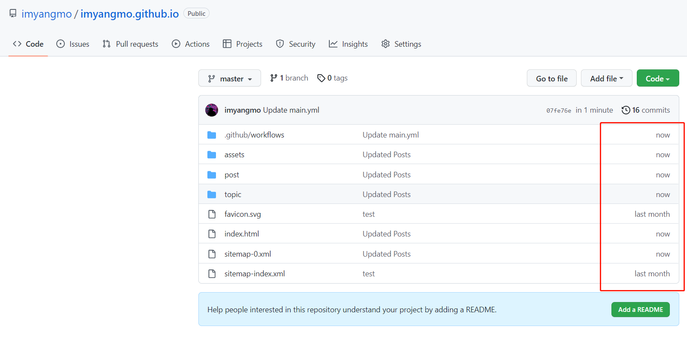

Use Github Actions to publish your site automatically
Create At: 2022-11-08 06:37:00This article will guide you through the process of automatic publishing your site, if you:
- Do not wish / know how to run Notionpaper locally on your computer
- Do not wish to upload your site after every generation
- have restricted Internet access (from certain regions of the world)
Setup Github Actions Secrets
Assume you have applied Notion tokens already, and this token is like your password, it is not supposed to be known to people other than you, therefore, in order to keep your token safe, you should configure your token as secret variable, so Github Actions can only get a encrypted token.
By doing so, go to “Settings” of your repo, click on “Secrets” - “Actions”, and click “New repository secret”.
Named as “NOTION_TOKEN” (all capitalized), and paste your token under
Then “Add secret”.
Configure Github Actions
Assume you have a Github Pages repo, go to your repo, and go to “Actions” tab, click on “New workflow”.
Click “set up a workflow yourself”
Paste and change below codes into the editing area:
name: NotionPaper
run-name: Updating
env:
USER_NAME: NotionpaperBot
USER_EMAIL: imyangmo@gmail.com
DATABASE_ID: 'a0cb2faf978a4843b982e943986fd3c5'
NOTION_VERSION: '2022-02-22'
NOTION_API_BASE_URL: 'https://api.notion.com/v1/'
GOOGLE_ANALYTICS_3: 'UA-92314993-3'
NOTION_TOKEN: ${{ secrets.NOTION_TOKEN }}
COMMIT_MSG: 'Updated Posts'
DOMAIN_NAME: ''
on: workflow_dispatch
jobs:
Retrive-and-Publish:
runs-on: ubuntu-latest
steps:
- name: Checkout current repo
uses: actions/checkout@v3
- name: Prepare git
run: |
rm -r *
ls
git config --global user.email ${{ env.USER_EMAIL }}
git config --global user.name ${{ env.USER_NAME }}
- name: Clone and config Notionpaper
run: |
mkdir tmp
cd tmp
git clone https://github.com/imyangmo/notionpaper.git
cd notionpaper
cd ${GITHUB_WORKSPACE}/tmp/notionpaper/src
rm config.ts
echo "export const DATABASE_ID = '${{ env.DATABASE_ID }}';" >> config.ts
echo "export const NOTION_TOKEN = '${{ env.NOTION_TOKEN }}';" >> config.ts
echo "export const NOTION_VERSION = '${{ env.NOTION_VERSION }}';" >> config.ts
echo "export const NOTION_API_BASE_URL = '${{ env.NOTION_API_BASE_URL }}';" >> config.ts
echo "export const GOOGLE_ANALYTICS_3 = '${{ env.GOOGLE_ANALYTICS_3 }}';" >> config.ts
- name: Prepare Node
uses: actions/setup-node@v3
with:
node-version: 16.16
- name: Retrive contents
run: |
cd ${GITHUB_WORKSPACE}/tmp/notionpaper
npm ci
npm run build
- name: Config CNAME file
if: ${{ env.DOMAIN_NAME != '' }}
run: |
cd ${GITHUB_WORKSPACE}
echo "${{ env.DOMAIN_NAME }}" >> CNAME
- name: Publish
run: |
ls
mv ${GITHUB_WORKSPACE}/tmp/notionpaper/dist/* ${GITHUB_WORKSPACE}
rm -r ${GITHUB_WORKSPACE}/tmp
git add .
git commit . -m '${{ env.COMMIT_MSG }}'
git pushIf you don’t know what is this, just focus on:
env:
USER_NAME: NotionpaperBot
#Your git user name that commits your site, you could choose whatever you want
USER_EMAIL: imyangmo@gmail.com
#Your git email that commits your site, you could choose whatever you want
DATABASE_ID: ''
#Your Notion database ID, if you don't know what this is,
#chech https://docs.notionpaper.cc/post/6262938e-86d0-4214-af03-63078eb01ce3/
NOTION_VERSION: '2022-02-22'
#Keep it as it is
NOTION_API_BASE_URL: 'https://api.notion.com/v1/'
#Keep it as it is
GOOGLE_ANALYTICS_3: ''
#If you don't know what this is, keep it as it is
NOTION_TOKEN: ${{ secrets.NOTION_TOKEN }}
#Keep it as it is, make sure you completed previous step
COMMIT_MSG: 'Updated Posts'
#Commit message. If you don't know what this is, keep it as it is
DOMAIN_NAME: ''
#If you have binded a custom domain for your Github Pages, then put it here
#Otherwise, Keep it as it isAfter this, click on the green button says “Start commit” on the top right of the page, then click “Commit new file”.
Publish
Now go back to “Actions” tab, select “NotionPaper” - “Run workflow” - “Run workflow”, it will start generating your site
You could also observes how it goes by click on “Updating” - “Retrive-and-Publish”
If everything goes right, you could see your repo has been updated
Update w/o manually triggers
Now you might see you need to click on the button to start the generation, you could also set it update everyday / every month / or so.
Edit main.yml in your repo - .githbub - workflows, change the on param:
If you want to update your site everyday, change it to 0 0 * * * , and commit your change.
This string is called Cron Syntax, here are some helpful patterns:
// Every Monday at 1PM UTC (9AM EST)
0 13 * * 1
// At the end of every day
0 0 * * *
// Every 10 minutes
*/10 * * * *